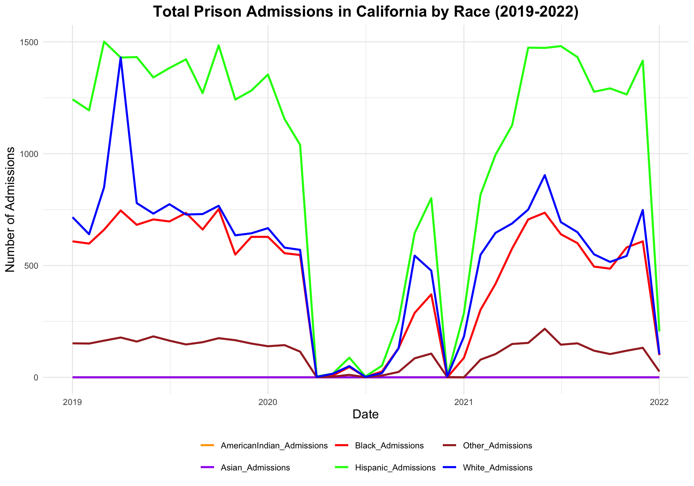
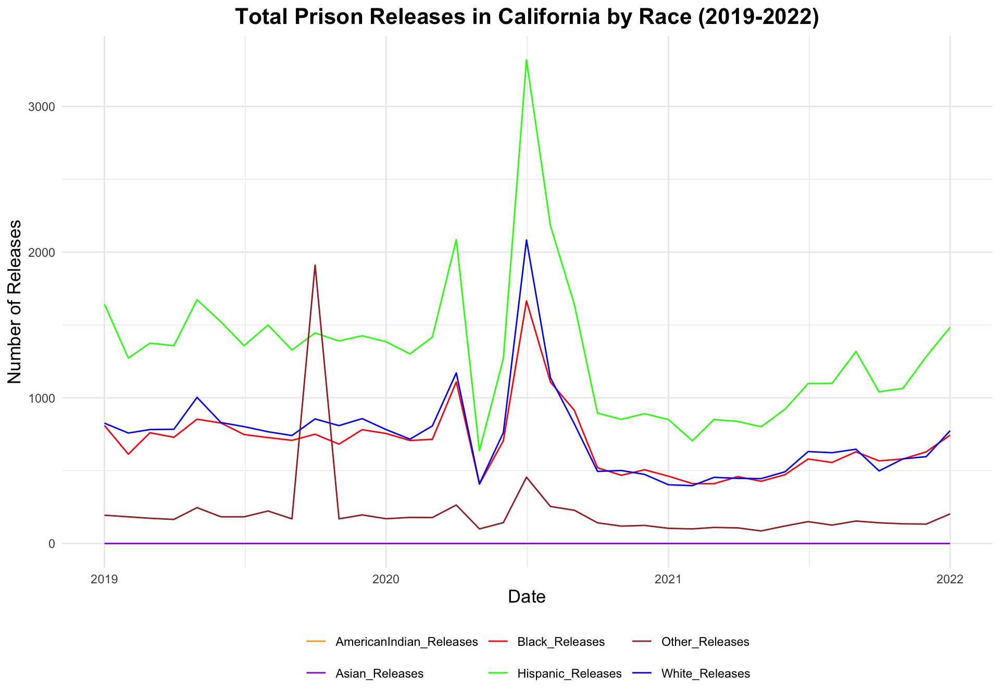

Data Link: https://www.kaggle.com/datasets/konradb/prison-population-in-the-us?select=populations_states.csv
Blog Post 4
Author
Group 10
Published
November 2, 2024
Modified
November 2, 2024
For Blog Post 4, we are focusing on analyzing data from specific states, starting with California. We chose California because it has one of the largest populations in the country, which means there’s more data available on its population demographic. This helps ensure that our analysis is reliable and detailed.
We’re concentrating on the 2019 to 2022 years, which cover the main covid period, so we can explore how the pandemic may have impacted these rates. Our goal is to gather data on California’s racial demographics to compare admission and release rates both by race and across the total population.
In our model, we aim to predict total prison admissions by analyzing how admissions from different racial groups contribute to overall numbers. By examining the impact of admissions from each racial group, we can identify which groups contribute the most to the total number of admissions. This model enables us to make predictions about future admissions, understand how various groups influence the overall numbers, and observe how trends may change over time, particularly in response to policy changes or significant events like the pandemic. Through this approach, we aim to uncover important patterns and disparities in prison admissions.
library(ggplot2)library(dplyr)
Attaching package: 'dplyr'
The following objects are masked from 'package:stats':
filter, lag
The following objects are masked from 'package:base':
intersect, setdiff, setequal, union
library(tidyr)library(dplyr)library(pls)
Attaching package: 'pls'
The following object is masked from 'package:stats':
loadings
library(car)
Loading required package: carData
Attaching package: 'car'
The following object is masked from 'package:dplyr':
recode
data =readRDS("dataset/cleaned_dataset.rds")data$date =as.Date(data$Date)data_filtered = data %>%filter(State =="California", date >=as.Date("2019-01-01"), date <=as.Date("2022-01-01"))data_long = data_filtered %>%select(date, White_Admissions, Black_Admissions, Hispanic_Admissions, AmericanIndian_Admissions, Asian_Admissions, Other_Admissions) %>%pivot_longer(cols =-date, names_to ="Race", values_to ="Admissions")ggplot(data_long, aes(x = date, y = Admissions, color = Race)) +geom_line(linewidth =1) +labs(title ="Total Prison Admissions in California by Race (2019-2022)",x ="Date",y ="Number of Admissions" ) +theme_minimal() +scale_color_manual(values =c("White_Admissions"="blue","Black_Admissions"="red","Hispanic_Admissions"="green","AmericanIndian_Admissions"="orange","Asian_Admissions"="purple","Other_Admissions"="brown")) +theme(plot.title =element_text(size =16, face ="bold", hjust =0.5),axis.title.x =element_text(size =13),axis.title.y =element_text(size =13),legend.position ="bottom",legend.title =element_blank())

In 2019, Hispanic admission Black admissions peaked at around 1500 in early 2020 but showed a sharp decline later that year, reflecting pandemic-related changes in law enforcement and public health policies. White admissions approached 1000 at the end of 2021, indicating fluctuations similar to Black admissions. Meanwhile, Hispanic and Asian groups consistently recorded lower admissions, generally remaining below 500, suggesting lesser representation or varying enforcement practices. Overall, these trends highlight the need for targeted interventions to address systemic disparities in the prison system. Our dataset is kind of missing Asian and American Indian data. Asian admission is 0 for this whole period and American Indian admission is 1 in May 2020, which is not realistic. Therefore, we will focus on the admission patterns for Hispanic, Black, White, and Other races. In 2019, Hispanic admissions remained high, fluctuating between 1250 and 1500, while both White and Black admissions stabilized around 700, with White peaking of 1400 in March. In 2020, all races experienced a dramatic drop in admissions to zero due to COVID-19. However, starting in June 2020, admissions for each race rebounded to about half of their previous levels. By 2021, admissions returned to their pre-COVID patterns: Hispanic remained around 1300, Black and White climbed back to approximately 750, experiencing fluctuations, while admissions for Other stabilized at around 250.
data_filtered <- data |>filter(State =="California", date >=as.Date("2019-01-01"), date <=as.Date("2022-01-01"))data_long <- data_filtered |>select(date, White_Releases, Black_Releases, Hispanic_Releases, AmericanIndian_Releases, Asian_Releases, Other_Releases) |>pivot_longer(cols =-date, names_to ="Race", values_to ="Releases")ggplot(data_long, aes(x = date, y = Releases, color = Race)) +geom_line(linewidth = .5) +labs(title ="Total Prison Releases in California by Race (2019-2022)",x ="Date",y ="Number of Releases") +theme_minimal() +scale_color_manual(values =c("White_Releases"="blue","Black_Releases"="red","Hispanic_Releases"="green","AmericanIndian_Releases"="orange","Asian_Releases"="purple","Other_Releases"="brown")) +theme(plot.title =element_text(size =16, face ="bold", hjust =0.5),axis.title.x =element_text(size =13),axis.title.y =element_text(size =13),legend.position ="bottom",legend.title =element_blank())

This plot shows the number of total prison releases in California by race from the beginning of 2019 to the end of 2021. It illustrates a notable disparity in prison release numbers by race, with the Hispanic group showing the highest release numbers, followed by White and Black groups with a similar trend. The Other category also has minor fluctuations, while American Indian and Asian groups have a minimal number of releases over the period.
Hispanic releases consistently show the highest numbers among all racial categories throughout the pandemic period. This group experiences two major spikes, with the highest peak in mid-2020, reaching more than 3000 releases. After this peak, there is a steep decline, followed by a more moderate trend with minor fluctuations through 2021. As mentioned earlier, Black and White releases exhibit similar patterns. Both groups show two noticeable increases in early 2020, with less pronounced peaks compared to the Hispanic group. Just like the Hispanic group, Black and White groups display a flatter pattern from late 2020 throughout the whole of 2021.
Other group is a relatively small group, but shows one major peak in late 2019, preceding all the other racial groups. This spike appears more pronounced due to this category’s low baseline of releases. After the peak, releases stabilize at a lower level and maintain a steady trend through 2020 and 2021.
The fact that American Indian and Asian prison release numbers are consistently reported as zero throughout the period is an unrealistic phenomenon. In any large and diverse prison system, such as California’s, it would be expected that at least some individuals from every racial group would be released over a multi-year period. This consistent zero likely reflects issues with data reporting or categorization rather than a true absence of releases, as it is improbable for entire racial groups to have no recorded releases for several years.
The significant peaks in prison releases for most racial groups (Hispanic, Black, and White) around early to mid-2020 likely correspond to policy responses to the COVID-19 pandemic. During this time, many jurisdictions, including California, implemented emergency measures to reduce prison populations to mitigate the spread of the virus within the facilities. These measures included early releases, prioritizing individuals nearing the end of their sentences, and releasing those deemed low-risk or vulnerable to severe COVID-19 complications.
Now lets do the modelling part…
data_filtered = data %>%filter(date >=as.Date("2019-01-01"), date <=as.Date("2022-01-01"))data_filtered <- data_filtered[complete.cases(data_filtered), ]
ncomp_optimal <-which.min(RMSEP(pcr_model)$val[1,,])-1print(paste("Optimal number of components:", ncomp_optimal))
[1] "Optimal number of components: 6"
We performed Principal Component Regression analysis on prison admission data from 2019-2022, utilizing 665 observations and 6 racial/ethnic admission predictors. The model was validated using 10-fold cross-validation. The component structure reveals that the first component explains 50.36% of predictor variance, with two components capturing 73.29%, and all six components explaining 100%.
The model’s performance, measured by cross-validated RMSEP, shows substantial error reduction from the baseline 1018 to 38.94 with all six components. Notably, the model exhibits strong predictive power, with the first component alone explaining 93.99% of variance in total admissions, and three components reaching 99.40%. The optimal model uses all 6 components, though the high explained variance with fewer components suggests a more parsimonious model might be practical.
The final PCR model was fitted using all six components, as determined by the optimal number of components from cross-validation. The coefficients represent the relationship between each racial/ethnic category and total admissions. White admissions show the strongest effect (404.43), followed closely by Hispanic admissions (396.43) and Black admissions (283.86). The model indicates substantially smaller effects for American Indian (23.16), Other (19.77), and Asian admissions (4.47), with an intercept of 7.79. These coefficients represent the expected change in total admissions for a one-unit increase in each admission category, while accounting for the correlations among predictors through the PCR framework.
This code segment calculates key model performance metrics. We first generate predicted values (fitted_values) and calculate residuals by subtracting these from actual total admissions. The mean squared error (mse) is computed from these residuals, accounting for degrees of freedom (n-p-1). Standard errors are derived using the design matrix X and mse. T-values are calculated by dividing coefficients by their standard errors, leading to p-values using the t-distribution. Finally, we compute R-squared (proportion of variance explained) and its adjusted version, which accounts for the number of predictors in the model.
cat(sprintf("Number of components used: %d\n", ncomp_optimal))
Number of components used: 6
This section creates a comprehensive summary data frame containing all model statistics and displays key performance metrics. The extremely high R-squared and adjusted R-squared values (both 0.9986) indicate that the model explains 99.86% of the variance in total admissions, even after adjusting for the number of predictors. Using all six components achieves this nearly perfect fit, suggesting that each racial/ethnic admission category contributes meaningfully to predicting total admissions.
All variables exhibit statistical significance at the highest conventional level (p < 0.0001), except the intercept which is still highly significant (p = 0.003522). The intercept of 7.7893 represents baseline admissions when all racial/ethnic admissions are zero, though this has limited practical interpretation in this context. The coefficients reveal a clear hierarchy of impacts:
White admissions (404.435) show the strongest relationship with total admissions, implying that each unit increase corresponds to approximately 404 more total admissions. This is followed closely by Hispanic admissions (396.427) and Black admissions (283.856), suggesting these three groups are the primary drivers of total admission numbers. Considerably smaller effects are observed for American Indian (23.159), Other (19.772), and Asian admissions (4.466).
The extremely high t-values (ranging from 12.64 for Asian to 61,867.6 for White admissions) and correspondingly low p-values indicate exceptional statistical reliability. The remarkably small standard errors (all < 0.36) demonstrate high precision in our estimates. This precision is particularly notable for White (0.0065), Black (0.0131), and Hispanic (0.0105) admissions, suggesting our model captures these relationships with exceptional accuracy.
These findings suggest a highly stratified admission pattern where changes in White, Hispanic, and Black admissions have substantially larger effects on total admissions compared to other racial/ethnic groups. The model’s statistical robustness (as evidenced by the significance levels and standard errors) provides strong confidence in these observed patterns.
The magnitude differences between groups might reflect underlying systemic patterns in the criminal justice system, though such interpretation requires careful consideration of broader socio-economic and demographic factors not captured in this model.
The Variance Inflation Factors (VIF) reveal moderate multicollinearity in the dataset. A common rule of thumb suggests that VIF values exceeding 5 or 10 indicate problematic multicollinearity. In our analysis, Hispanic admissions (7.67) and Black admissions (6.29) show concerning levels of multicollinearity, indicating their variations are moderately explained by other predictors in the model.
White admissions (3.35) and Other admissions (2.49) show moderate but acceptable levels of multicollinearity, while American Indian (1.39) and Asian admissions (1.29) demonstrate very low multicollinearity. This pattern suggests that using PCR was indeed appropriate, particularly for handling the correlations among Hispanic and Black admission variables, though the overall multicollinearity isn’t as severe as might have been expected in such demographic data.
This VIF analysis justifies our use of PCR while also suggesting that simpler regression techniques might have been viable given the moderate levels of multicollinearity for most variables.
Our PCR analysis effectively addressed the multicollinearity in California prison admissions data, successfully transforming correlated predictors into interpretable components. Though simpler regression techniques might be viable alternatives, given the moderate initial multicollinearity levels. Future research should extend to other states to provide comparative insights.